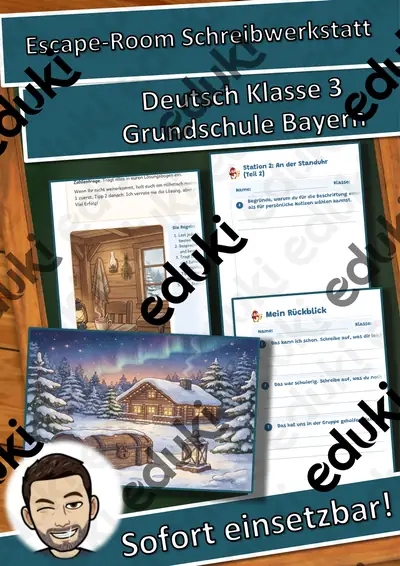

Lesespur: Kalligrafie: die Kunst der schönen Schrift – Lesespurgeschichte mit Rätseln (Klasse 7)
Kalligrafie – die Kunst der schönen Schrift – Lesespurgeschichte Kunst (Klasse 7)Begib dich mit deiner Klasse auf eine spannende Lesespur durch eine Schreibwerkstatt! Vivien und Till besuchen ein Museum in einer ehemaligen Klosterbibliothek und fragen sich, warum man heute noch lernen sollte, schön mit der Hand zu schreiben: Am Werkzeugschrank entdecken sie Schilfrohr, Gänsekiel und Pinsel, am Federtisch den Wechsel von dicken und dünnen Strichen, am Linienpult die Kunst der Hilfslinien und an der Rhythmuswand, warum gleichmäßige Abstände so wichtig sind. In der Schriftengalerie verfolgen sie die Geschichte von den römischen Großbuchstaben bis zur schwungvollen Kursive, im Weltschriftenraum bewundern sie arabische und ostasiatische Kalligrafie, und im Schreibsaal gestalten sie einen eigenen Spruch. Ihr Tintenfass Tinti ist immer dabei. Am Ende jedes Abschnitts verrät ein Hinweis den nächsten Ort auf dem Museumsplan – nur wer richtig liest und mitdenkt, findet den Weg und sammelt alle geheimen Buchstaben zum Lösungswort.
Die perfekte Lesespur für den KUNSTUNTERRICHT der 7. Klasse – ideal als Einstieg vor eigenen Schriftübungen: Sie verbindet motivierendes, sinnentnehmendes Lesen mit Schriftgeschichte und Gestaltungsregeln. Das Material ist SOFORT EINSETZBAR und in DREI DIFFERENZIERUNGSSTUFEN (leicht ★ / mittel ★★ / schwer ★★★) angelegt.WICHTIG: Das komplette Material ist sowohl in FARBE als auch in SCHWARZ-WEISS enthalten – ideal zum Sparen von Druckkosten.DAS IST ENTHALTEN
- Lesespurgeschichte in 3 Niveaus (leicht, mittel, schwer)
- farbiger Museumsplan als Suchkarte
- Hörverstehen mit QR-Code zur MP3 (selbstständiges Hören mit Kopfhörern)
- vier Aufträge auf dem Weg: ein Verbinde-Rätsel, ein Quiz, eine Rechenaufgabe und ein Steckbrief
- Rätselseite (Wörter-Suchsel + Wissensfragen)
- Ausmalbild zum Thema
- ausführliches Lösungsblatt für die Lehrkraft
- alles zusätzlich als komplette Schwarz-Weiß-VarianteSO GEHT DIE LESESPURDie Jugendlichen lesen ab START, entnehmen dem Text einen Hinweis auf einen Ort im Museum, suchen ihn auf dem Plan und lesen bei dieser Station weiter. An jeder richtigen Station gibt es einen Sammelbuchstaben. Eingebaute Sackgassen (Kreuzgang, Museumsladen, Brunnenhof, Treppenturm) gehören zwar zum Museum, sind aber keine Stationen und dienen der Selbstkontrolle. Am Ende werden die gesammelten Buchstaben umgestellt und ergeben ein geheimes Lösungswort. (Die Lösungen sind selbstverständlich nur im Lösungsblatt für die Lehrkraft enthalten.)INHALTLICHER SCHWERPUNKTDie Jugendlichen lernen Kalligrafie als Kunst des schönen Schreibens kennen, unterscheiden Schreibwerkzeuge und ihre Spuren, verstehen den Wechsel von Haar- und Schattenstrichen durch den Federwinkel, beachten Hilfslinien und Rhythmus, vergleichen Schriften verschiedener Epochen und Kulturen und gestalten einen eigenen Schriftzug mit verzierter Initiale.ABGEDECKTER LEHRPLAN (Klasse 7, Kunst)
- Kunst (LehrplanPLUS Bayern) – Klasse 7 „Schrift als Gestaltungsmittel – Kalligrafie“: Kalligrafie als Kunst des schönen Schreibens kennen, Schreibwerkzeuge und ihre Spuren unterscheiden, Federwinkel, Hilfslinien und Rhythmus beachten, Schriften verschiedener Zeiten und Kulturen vergleichen und einen eigenen Schriftzug gestalten.
- Deutsch – Lesen mit Texten und Medien umgehen: Lesestrategien anwenden, Texten gezielt Informationen entnehmen, sinnentnehmend und selektiv lesen; Zuhören: einem Sachhörtext konzentriert folgen (Hörverstehen mit MP3); Schreiben: leserliche Handschrift.
- Mathematik – Rechnen im Sachzusammenhang.
- Fächerübergreifend / Kompetenzen: Geschichte (Mittelalter, Schriftkultur), interkulturelles Lernen, Feinmotorik, kreatives Gestalten (Ausmalbild).
Geeignet für Freiarbeit, Stationenlernen, Vertretungsstunden, Wochenplan, Projekttage und Homeschooling. Klassenstufe 7 (differenziert einsetzbar auch in Klasse 6 und 8).
Ähnliche Materialien

Schrift Lückentext mit Wortspeicher Hörverstehen und Suchsel

Gespensterhaus aus meiner Hand – Halloween-Bastelvorlage mit Lesen und Schreiben, 3-fach differenziert (Klasse 1/2)

Lesespur: Heilige Schriften der Weltreligionen – Lesespurgeschichte mit Rätseln (Klasse 7)

Lesespur: Plakat und Typografie: Gestalten mit Schrift und Bild – Lesespurgeschichte mit Rätseln (Klasse 8)

Till Eulenspiegel Lückentext mit Wortspeicher Hörverstehen und Suchsel

Escape Room Schreibwerkstatt – Deutsch Klasse 3 Grundschule: 6 Stationen, 2 Schlösser

Lesespur: Barcodes und QR-Codes: Informationen in Strichen und Punkten – Lesespurgeschichte mit Rätseln (Klasse 7)